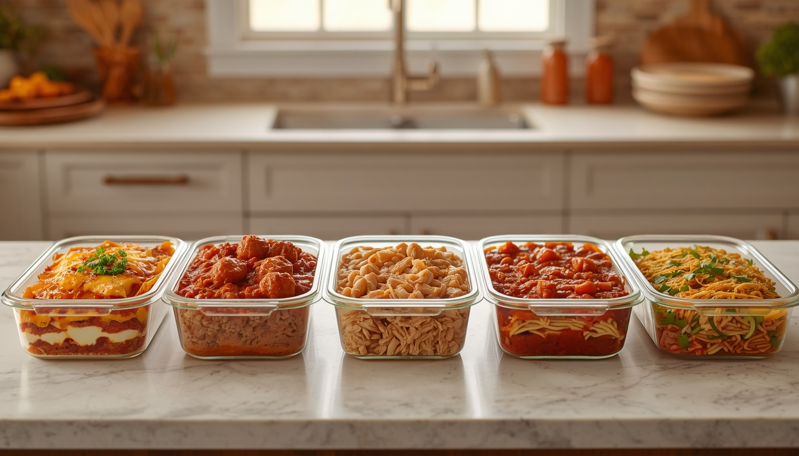
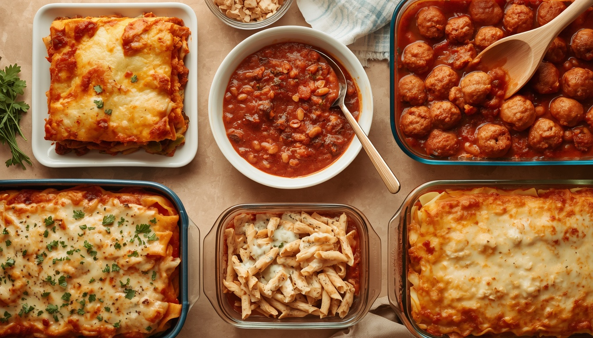
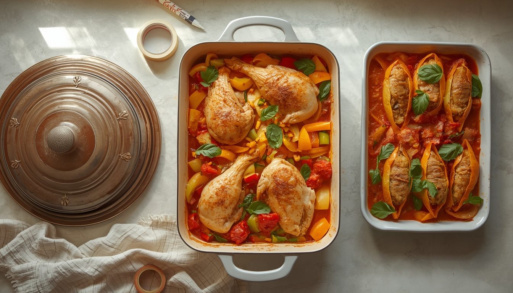
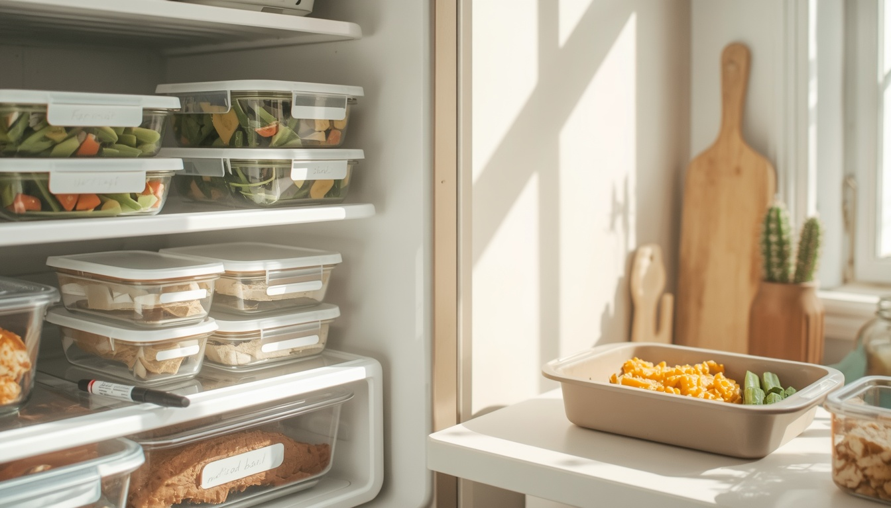

Make-ahead meals · Busy family dinners
18 Make-Ahead Dinners for Busy Families (Sorted by When You Cook)
Tomorrow-you is tired, hungry, and absolutely not making heroic decisions at 5:42 p.m. Make-ahead cooking is a little gift you mail to your future self: do the work when you have the energy, then let dinner be almost handled when life gets loud.

This guide to make ahead dinners is organized by the moment you want to do the work: cook a batch on Sunday, assemble dinner the night before, or spend about ten minutes getting a slow-cooker meal ready in the morning. Pick the method that fits your actual week—not the imaginary week where every evening is peaceful and everyone loves chopping onions.
First, choose your make-ahead style
- Cook it: Best when you want dinner fully made and only need to reheat it.
- Assemble it: Best for casseroles and sheet-pan meals that taste freshest baked right before serving.
- Prep it: Best for slow-cooker or quick-cook meals where a short morning setup saves the evening.
Important distinction: The fridge-life notes below refer to fully cooked leftovers or to the stated safe holding window for prepared ingredients. Raw chicken and other raw proteins should not be stored in the fridge for several days just because they are in a meal-prep container. For raw poultry, plan to cook it within 1–2 days, or freeze it. For any make-ahead dish, follow package instructions and use the shorter safe window when ingredients differ.
Style 1: Sunday-cook dinners (make once, reheat later)
These are the best make-ahead dinner recipes when your future self wants the whole meal done. Cook, portion, cool quickly, and refrigerate what you will eat within 3–4 days. Freeze the rest in meal-sized portions.
1. Classic meat lasagna
A full pan makes several portions and reheats well. This version uses jarred marinara to keep the prep manageable.
Ingredients
9–12 lasagna noodles; 1 pound ground beef or turkey; 1 jar (24–28 ounces) marinara; 15 ounces ricotta; 2 cups shredded mozzarella; ½ cup grated Parmesan; 1 teaspoon Italian seasoning; 1 tablespoon olive oil if needed.
Step-by-step instructions
- Heat oven to 375°F. Bring a large pot of salted water to a boil and cook noodles 2 minutes less than the package’s full time. Drain and lay flat so they do not stick.
- While noodles cook, brown the ground meat in a skillet over medium heat, breaking it into small pieces, until no pink remains. Drain excess fat if needed. Stir in marinara and Italian seasoning; simmer 5 minutes.
- Spread a thin layer of meat sauce in a 9×13-inch baking dish. Add noodles, spoonfuls of ricotta, meat sauce, and mozzarella. Repeat layers; finish with sauce and mozzarella, then sprinkle Parmesan on top.
- Cover loosely with foil and bake 25 minutes. Uncover and bake another 10–15 minutes until bubbling and the center reaches 165°F. Rest 15 minutes before slicing.
- For make-ahead storage, cool portions in shallow containers and refrigerate within 2 hours. Freeze portions you will not eat within 3–4 days.
Helpful variation: Use lentil marinara or sautéed mushrooms instead of meat. If the ricotta is very thick, stir in a tablespoon or two of water to make it easier to spread.
How to reheat: Cover a portion and microwave in 60–90 second bursts, or cover the dish with foil and heat at 350°F. Add a spoonful of sauce if dry; check the center reaches 165°F.
2. Big-pot turkey or beef chili
A forgiving, freezer-friendly pot that can become bowls, baked-potato topping, or taco filling.
Ingredients
1 pound ground beef or turkey; 1 medium onion, diced; 2 cans (15 ounces each) beans, drained and rinsed; 1 can (28 ounces) crushed tomatoes; 1 tablespoon chili powder; 1 teaspoon cumin; ½ cup broth, plus more as needed; salt and pepper.
Step-by-step instructions
- Set a heavy pot over medium heat. Add the ground meat and onion; cook 7–10 minutes, breaking up the meat, until browned and the meat is safely cooked. Drain excess fat if needed.
- Stir in chili powder and cumin for 30 seconds to release their aroma. Add beans, crushed tomatoes, and broth; scrape up any browned bits from the bottom.
- Bring to a gentle simmer, then lower the heat. Cook uncovered for 25–35 minutes, stirring every few minutes, until the chili thickens. Add broth if it becomes thicker than you like; taste and season.
- Serve with toppings kept separate. Divide leftovers into shallow containers promptly so a large pot does not cool slowly on the counter.
- Label containers with the date. Refrigerate portions for the next 3–4 days and freeze the rest.
Helpful variation: For a meatless pot, skip the meat and use an extra can of beans plus diced mushrooms. If serving kids, keep the base mild and put hot sauce on the table.
How to reheat: Reheat on the stovetop, stirring, until 165°F; add broth if thick. Microwave covered, stir halfway through, and check the center.
3. Saucy meatballs
Bake the meatballs first, then store them in marinara so they stay tender and can be served several different ways.
Ingredients
1½ pounds ground beef or turkey; 1 egg; ½ cup breadcrumbs; ¼ cup grated Parmesan; 2 minced garlic cloves; 1 teaspoon Italian seasoning; ½ teaspoon salt; 3 cups marinara.
Step-by-step instructions
- Heat oven to 400°F and line a rimmed baking sheet with parchment or foil. In a large bowl, combine the ground meat, egg, breadcrumbs, Parmesan, garlic, seasoning, and salt.
- Mix with clean hands or a fork just until combined; overmixing can make meatballs dense. Shape into about 18–22 evenly sized balls and place them with space between each.
- Bake 15–20 minutes, depending on size, until cooked through. Ground poultry meatballs must reach 165°F; use a thermometer rather than judging only by color.
- Meanwhile, warm marinara in a wide saucepan. Transfer cooked meatballs into the sauce and simmer gently for 5 minutes so they are coated.
- Cool and portion meatballs with sauce in shallow containers. Keep rolls, pasta, and toppings separate until serving.
Helpful variation: Make smaller meatballs for faster, more even cooking. For a plant-based version, follow the product’s package cooking and storage directions.
How to reheat: Warm gently in covered sauce on the stove until the centers reach 165°F. Microwave covered at medium power, turning the meatballs and stirring the sauce halfway through.
4. Shredded salsa chicken
A versatile batch of tender chicken for tacos, rice bowls, quesadillas, and loaded potatoes.
Ingredients
2 pounds boneless, skinless chicken breasts or thighs; 1½ cups mild salsa; 1 teaspoon ground cumin; ½ teaspoon garlic powder; ¼ cup broth or water; salt to taste.
Step-by-step instructions
- Put chicken in a wide skillet or saucepan in a single layer. Pour salsa and broth over it, then sprinkle on cumin and garlic powder.
- Bring the liquid to a gentle simmer over medium heat. Cover, reduce heat to low, and cook, turning once, until the thickest pieces reach 165°F. Timing varies by thickness; start checking after about 12–15 minutes for thin breasts and allow longer for thicker pieces or thighs.
- Transfer chicken to a board and shred with two forks. Return the shredded meat to the pan and stir it through the salsa juices.
- Taste and adjust seasoning. If the sauce is watery, simmer uncovered for a few minutes; if it looks dry, add a splash of broth.
- Divide into shallow containers with some sauce. Refrigerate portions for the next few days and freeze anything intended for later.
Helpful variation: For a slow-cooker version, use a tested recipe and the appliance’s safe cooking guidance; do not leave raw chicken sitting unrefrigerated before starting.
How to reheat: Warm in a covered skillet with a splash of broth, stirring until 165°F. In the microwave, cover and stir halfway through to avoid dry edges and cold spots.
5. Baked ziti
A cheesy pasta bake that is easy to portion. Slightly undercooking the pasta helps it hold its shape after baking and reheating.
Ingredients
1 pound ziti or penne; 4 cups marinara; 1½ cups ricotta or cottage cheese; 2 cups shredded mozzarella; ½ cup Parmesan; optional 2 cups cooked spinach or ½ pound browned sausage.
Step-by-step instructions
- Heat oven to 375°F. Boil pasta in salted water and cook 2 minutes less than the package directions. Drain well.
- In a large bowl, mix pasta with about three-quarters of the marinara, ricotta, half the mozzarella, and optional spinach or fully cooked sausage.
- Spread a thin layer of remaining marinara in a 9×13-inch dish. Add the pasta mixture, spoon the remaining sauce over the top, then add the rest of the mozzarella and Parmesan.
- Cover with foil and bake for 20 minutes. Uncover and bake 10–15 minutes more until bubbling and hot in the center, reaching 165°F.
- Rest 10 minutes, then portion. Add a spoonful of sauce before storing if the pasta looks like it has absorbed most of the liquid.
Helpful variation: Keep extra sauce on hand: pasta continues to absorb moisture in the fridge. Serve with steamed broccoli or a simple salad.
How to reheat: Cover and microwave in short bursts or heat covered at 350°F. Add a spoonful of water or marinara and heat to 165°F.
6. Chicken enchilada casserole
All the flavor of enchiladas without rolling each tortilla. Use already-cooked chicken to make assembly faster.
Ingredients
2–3 cups cooked shredded chicken; 10–12 small corn or flour tortillas; 2 cups enchilada sauce; 1 can (15 ounces) black beans, drained (optional); 1½–2 cups shredded Monterey Jack or cheddar; ½ teaspoon cumin.
Step-by-step instructions
- Heat oven to 375°F. Spoon a thin layer of enchilada sauce into the bottom of a 9×13-inch baking dish.
- Tear or cut tortillas into broad strips. In a bowl, mix shredded chicken with cumin and about half the remaining sauce. Stir in drained beans if using.
- Arrange half the tortilla pieces over the sauce, then add half the chicken mixture and a handful of cheese. Repeat the layers, finishing with sauce and the remaining cheese.
- Cover with foil and bake 20 minutes. Uncover and bake another 10–15 minutes until bubbling and the center reaches 165°F.
- Rest 10 minutes before slicing. Keep lettuce, avocado, sour cream, and crunchy toppings separate; add them at serving time.
Helpful variation: For a vegetarian casserole, replace chicken with black beans and sautéed bell peppers. If using leftover chicken, ensure it was stored safely and is still within its 3–4 day window.
How to reheat: Cover portions and microwave until the center reaches 165°F, or warm the whole dish covered at 350°F. Add fresh toppings afterward.

Style 2: Night-before assembly (tomorrow you just bakes it)
These dinners are for people who can manage ten minutes after dinner tonight but know tomorrow’s evening will be a sprint. Assemble in a baking dish or food-safe container, cover, and refrigerate. For raw-protein meals, cook the next day—do not leave raw chicken marinating for several days.
7. Lemon-garlic chicken and vegetables on one sheet pan
Assemble the ingredients the night before, then roast them fresh the next day. Keep raw chicken separate from ready-to-eat ingredients.
Ingredients
1½ pounds boneless chicken thighs or breasts; 1 pound baby potatoes, halved or quartered; 2 bell peppers or 3 carrots, chopped; 2 tablespoons olive oil; juice of ½ lemon; 2 garlic cloves, minced; 1 teaspoon paprika; 1 teaspoon dried oregano; salt and pepper.
Step-by-step instructions
- The night before, cut potatoes and vegetables into similarly sized pieces. Mix oil, lemon juice, garlic, paprika, oregano, salt, and pepper in a small container.
- Place raw chicken in a separate leakproof container on the lowest refrigerator shelf. Refrigerate the cut vegetables separately; do not leave the assembled raw chicken kit on the counter.
- The next day, heat oven to 425°F. Toss potatoes and vegetables with most of the oil mixture and spread them across a rimmed sheet pan. Add chicken and coat it with the remaining mixture.
- Roast for 20 minutes, then turn the vegetables and check the chicken. Continue roasting until the thickest chicken portion reaches 165°F and potatoes are tender; timing depends on cut and size.
- If vegetables finish before the chicken, remove them to a clean plate and continue cooking the chicken. Serve immediately with lemon wedges.
Helpful variation: Cut potatoes smaller than the chicken pieces so they have time to soften. Add broccoli florets for only the last 10–12 minutes to prevent overcooking.
How to reheat: Best freshly roasted. If cooked ahead, refrigerate leftovers for 3–4 days and reheat portions to 165°F; use the oven or air fryer for better vegetable texture.
8. Broccoli-cheddar rice casserole
A comforting way to use safely chilled cooked rice. Drain the broccoli well so the casserole stays creamy instead of watery.
Ingredients
4 cups cooked rice that has been promptly chilled; 3 cups broccoli florets; 1½ cups shredded cheddar; 1 cup milk; ½ cup plain yogurt or prepared white sauce; ½ teaspoon garlic powder; black pepper; optional 1½ cups cooked chicken or 1 can drained white beans.
Step-by-step instructions
- Heat oven to 375°F. Steam broccoli for 3–4 minutes until bright green but still firm. Drain thoroughly and chop into bite-sized pieces.
- In a large bowl, whisk milk, yogurt or white sauce, garlic powder, and pepper. Stir in chilled rice, broccoli, 1 cup cheddar, and optional cooked chicken or beans.
- Transfer to a greased 9×13-inch baking dish. Sprinkle the remaining cheddar over the top. Cover and refrigerate overnight if not baking immediately.
- When ready to cook, bake covered for 20 minutes, then uncover for 10–15 minutes until the center reaches 165°F and the cheese is bubbling. If it looks dry before baking, stir in a splash of milk.
- Serve hot. Refrigerate leftovers promptly in shallow containers; never leave cooked rice sitting at room temperature for an extended period.
Helpful variation: Use frozen broccoli if that is easier; thaw and drain it well first. For extra crunch, sprinkle breadcrumbs on top just before baking.
How to reheat: Cover and heat at 350°F or microwave individual servings until 165°F. Stir in a teaspoon of milk if the rice has dried out.
9. Sausage, peppers, and potatoes
A one-pan dinner with crisp edges and minimal cleanup. The steps below use fully cooked smoked sausage.
Ingredients
12–14 ounces fully cooked smoked sausage; 1½ pounds potatoes; 2 bell peppers; 1 onion; 1½ tablespoons olive oil; 1 teaspoon paprika; ½ teaspoon garlic powder; 1 teaspoon Italian seasoning; salt and pepper.
Step-by-step instructions
- The night before, wash potatoes and cut them into ½-inch cubes. Slice peppers and onion. Store the chopped vegetables in a covered container in the refrigerator; keep sausage separate until cooking.
- Heat oven to 425°F. Toss potatoes with oil, paprika, garlic powder, Italian seasoning, salt, and pepper. Spread on a large sheet pan and roast for 15 minutes.
- Meanwhile, slice sausage into coins and cut peppers and onion into strips. Toss with a little oil if needed.
- Remove the pan, turn the potatoes, and add sausage, peppers, and onion. Roast another 15–20 minutes, stirring once, until potatoes are tender and browned and the sausage is hot throughout.
- Taste and adjust seasoning. Serve with mustard or a quick yogurt dip. If using raw sausage instead, follow its package cooking instructions and verify it reaches a safe internal temperature.
Helpful variation: Avoid crowding the pan: use two pans if needed. Zucchini can be added for the final 10–12 minutes.
How to reheat: For crisp edges, use a 375–400°F oven or air fryer until hot throughout. Microwave covered to 165°F when speed matters more than crispness.
10. Taco bake with beans and corn
A flexible, family-friendly casserole. Use cooked ground beef or beans, and add chips at the end so they do not turn soggy overnight.
Ingredients
1 pound ground beef, fully cooked and seasoned, or 2 cans beans, drained; 1 cup corn; 1 cup salsa; 6–8 small tortillas, cut into strips; 1½ cups shredded cheese; 1 teaspoon taco seasoning; optional diced bell pepper.
Step-by-step instructions
- If using beef, brown it in a skillet over medium heat, breaking it up, until fully cooked. Drain excess fat and stir in taco seasoning and 2 tablespoons water. If using beans, toss them with the seasoning instead.
- Heat oven to 375°F. Lightly grease a baking dish. Mix the cooked beef or beans with corn, salsa, and optional diced bell pepper.
- Layer half the tortilla strips in the dish, spread on half the filling, and sprinkle with a third of the cheese. Repeat with remaining tortilla strips and filling; finish with the remaining cheese.
- Cover and bake for 20 minutes. Uncover and bake 10 minutes more until bubbling and the center reaches 165°F.
- Let stand 5–10 minutes before serving. Add crushed chips, lettuce, tomatoes, yogurt, or lime at the table rather than baking them into the casserole.
Helpful variation: For a crisp top, save chips until serving. If assembling the night before, refrigerate promptly and bake the next day; cooked beef should not be held in the fridge beyond the usual 3–4 day leftover window.
How to reheat: Cover and warm at 350°F until the center reaches 165°F. Add fresh chips and toppings after reheating.
11. Spinach and ricotta stuffed shells
A meatless pasta bake that can be assembled the night before. The key is well-drained spinach and pasta shells that are not overcooked.
Ingredients
20–24 jumbo pasta shells; 15 ounces ricotta; 1 cup cooked spinach, squeezed very dry; ½ cup grated Parmesan; 1 egg; 2 cups marinara; 1 cup shredded mozzarella; salt and pepper.
Step-by-step instructions
- Heat oven to 375°F. Cook shells in salted boiling water until just flexible, about 2 minutes less than package directions. Drain and spread on a tray to cool slightly.
- In a bowl, mix ricotta, squeezed-dry spinach, Parmesan, egg, a pinch of salt, and pepper until evenly combined.
- Spread about 1 cup marinara in a baking dish. Fill each shell with a heaping spoonful of ricotta mixture and place seam-side up in the sauce.
- Spoon the remaining marinara over the shells and sprinkle mozzarella on top. Cover and refrigerate overnight if preparing ahead.
- Bake covered for 25 minutes, then uncover and bake 10 minutes more until bubbling and the center reaches 165°F. Rest 5 minutes before serving.
Helpful variation: If the filling is runny, squeeze the spinach again or add a tablespoon of breadcrumbs. For freezing, use a freezer-safe dish and label it clearly.
How to reheat: Add a spoonful of marinara, cover, and heat at 350°F until 165°F in the center. Microwave individual servings covered in short bursts.
12. Cottage pie with a mashed-potato top
A hearty dish built from a savory filling and mashed potatoes. This version works with cooked ground beef or lentils.
Ingredients
1 pound ground beef or 2 cups cooked lentils; 1 small onion, diced; 2 cups mixed carrots and peas; 1 tablespoon tomato paste; 1 cup beef or vegetable broth; 1 teaspoon Worcestershire sauce (optional); 3–4 cups prepared mashed potatoes; ½ cup shredded cheddar (optional).
Step-by-step instructions
- Heat oven to 400°F. If using raw beef, brown it in a skillet with the onion for 7–10 minutes, breaking it up until fully cooked; drain excess fat. For lentils, sauté the onion in a little oil until softened, then add cooked lentils.
- Stir in tomato paste and cook 1 minute. Add carrots, peas, broth, and Worcestershire sauce if using. Simmer 5–8 minutes until the mixture is thick, not soupy. If too wet, simmer longer before assembling.
- Spoon the filling into a baking dish. Spread mashed potatoes over the top in an even layer, sealing the edges. Use a fork to make ridges that brown in the oven.
- Bake 20–30 minutes until the filling bubbles at the edges and the center is hot, reaching 165°F. If the potato top needs more color, broil briefly while watching closely.
- Rest 10 minutes before serving. For make-ahead prep, assemble, cover, and refrigerate; bake the next day, allowing extra time if the dish is cold.
Helpful variation: Frozen mixed vegetables and leftover mashed potatoes make this much quicker. Lentils provide a satisfying meatless version.
How to reheat: Cover portions and heat at 350°F until 165°F. Add a teaspoon of broth or gravy to the filling if it seems dry.

Style 3: Morning ten-minute prep (let dinner finish itself)
These are prep-ahead dinners for busy families who want to do a small amount before work or school. The recipes below assume a slow cooker or a quick-cook finish. Keep ingredients refrigerated until loading the appliance; never leave raw meat sitting on the counter while the day gets going.
13. Slow-cooker salsa chicken
A low-effort morning setup that becomes tacos, bowls, or quesadillas. Start cooking immediately after loading the slow cooker.
Ingredients
2 pounds boneless chicken; 1½ cups salsa; ½ teaspoon cumin; ½ teaspoon garlic powder; ¼ cup broth; tortillas or cooked rice for serving.
Step-by-step instructions
- The night before, measure salsa and spices and refrigerate them. Keep raw chicken sealed on the lowest refrigerator shelf; do not leave it in the slow-cooker insert at room temperature overnight.
- In the morning, place the chicken in the slow cooker. Add salsa, cumin, garlic powder, and broth, following the appliance’s fill limits and a tested recipe for your cut and quantity.
- Cover and cook on the setting and for the time recommended by your tested recipe and appliance instructions. Avoid repeatedly lifting the lid because heat escapes.
- Check the thickest chicken piece with a food thermometer; it must reach 165°F. Transfer to a clean board, shred with two forks, and stir back into the sauce.
- Serve with tortillas, rice, beans, or slaw. Refrigerate leftovers promptly in shallow containers and freeze any portions you will not use within 3–4 days.
Helpful variation: For a busy morning, prep the measured spices and toppings the night before, but add the raw chicken only when you are ready to start cooking.
How to reheat: Warm in a covered skillet with a splash of broth or microwave covered until 165°F. Never use a slow cooker to reheat cold leftovers.
14. Slow-cooker beef and bean chili
A hands-off chili with a short ingredient list. Browning the meat first improves flavor; prepare it ahead and refrigerate safely if mornings are tight.
Ingredients
1 pound ground beef or turkey; 1 onion, diced; 2 cans beans, drained; 1 can (28 ounces) crushed tomatoes; 1 tablespoon chili powder; 1 teaspoon cumin; ½ cup broth; salt and pepper.
Step-by-step instructions
- If browning ahead, cook the ground meat and onion in a skillet until the meat is fully cooked. Divide into shallow containers and refrigerate promptly; do not leave it on the counter overnight.
- In the morning, add the chilled cooked meat, beans, tomatoes, spices, and broth to the slow cooker. If starting with raw meat, use a tested slow-cooker recipe that explicitly covers that method and the appliance you have.
- Cover and cook according to the tested recipe and appliance manual. Keep the cooker within its recommended fill range and leave the lid on during cooking.
- Stir, taste, and adjust seasoning. Check that the chili is hot throughout; follow safe temperature guidance for the meat used.
- Serve with rice, baked potatoes, or cornbread. Portion leftovers into shallow containers and refrigerate or freeze promptly.
Helpful variation: Use extra beans and skip the meat for a pantry-friendly vegetarian chili. If you need a reliable short workday cook, choose a tested recipe with a cook time that matches your schedule and appliance.
How to reheat: Reheat on the stove, stirring, to 165°F; loosen with broth if needed. Microwave covered and stir halfway through.
15. BBQ pulled chicken sandwiches
Make the saucy chicken ahead and assemble sandwiches at dinner. Keeping the buns and slaw separate prevents soggy bread.
Ingredients
2 pounds boneless chicken; 1 cup barbecue sauce; ¼ cup broth; 1 teaspoon smoked paprika (optional); 1 teaspoon cider vinegar (optional); 4–6 buns; prepared coleslaw for serving.
Step-by-step instructions
- The night before, measure barbecue sauce, broth, and optional seasonings. Keep the raw chicken refrigerated in a sealed container, separate from ready-to-eat foods.
- In the morning, place chicken, sauce, broth, and optional paprika in the slow cooker. Follow a tested recipe and appliance guidance for the cut, quantity, and cook time; start cooking immediately.
- Cook covered until the chicken reaches 165°F in the thickest part. Transfer to a clean board and shred with two forks.
- Return shredded chicken to the sauce and stir well. If the sauce is thin, leave the lid ajar only as allowed by the appliance instructions or thicken it separately on the stove.
- Serve on toasted buns with cold coleslaw. Store the chicken separately from buns and slaw; portion and refrigerate promptly.
Helpful variation: Leftover pulled chicken is also good over baked potatoes, in wraps, or over rice. Freeze the chicken without bread or slaw.
How to reheat: Reheat chicken with a spoonful of sauce in a covered skillet or microwave until 165°F. Toast buns separately.
16. Creamy tomato tortellini soup
Prepare the tomato broth ahead and add tortellini near the end so the pasta does not turn mushy during a long cook.
Ingredients
1 tablespoon olive oil; 1 small onion, diced; 2 garlic cloves, minced; 1 can (28 ounces) crushed tomatoes; 4 cups broth; 1 teaspoon Italian seasoning; 9–12 ounces refrigerated cheese tortellini; ½ cup cream or milk; 2 cups baby spinach (optional); grated Parmesan.
Step-by-step instructions
- The night before, dice the onion and refrigerate it in a covered container. Keep tortellini and dairy refrigerated in their original packaging.
- In the morning, heat olive oil in a saucepan, if using a stovetop method, and sauté onion for 4–5 minutes. Add garlic and stir 30 seconds. Add tomatoes, broth, and Italian seasoning; simmer 15–20 minutes. For a slow-cooker version, use a tested soup recipe and add pasta and dairy only near the end.
- When the broth base is ready, bring it to a gentle simmer. Add tortellini and cook for the package’s stated time, usually just a few minutes, until tender.
- Lower the heat and stir in cream or milk and optional spinach until the spinach wilts. Do not boil hard after adding dairy.
- Serve immediately with Parmesan. If making extra, store the broth base separately from cooked tortellini when practical; cool and refrigerate both promptly.
Helpful variation: Tortellini continues absorbing liquid as it sits. Keeping the pasta separate makes leftovers much closer to freshly made soup.
How to reheat: Reheat soup on the stove, stirring, to 165°F. Add broth to loosen it; if possible, cook fresh tortellini separately and combine just before serving.
17. Coconut chickpea curry
A pantry-based vegetarian dinner with a creamy tomato-coconut sauce. It can simmer on the stove or be adapted to a tested slow-cooker recipe.
Ingredients
2 cans chickpeas, drained and rinsed; 1 small onion, diced; 1 can (14–15 ounces) diced tomatoes; 1 teaspoon curry powder, plus more to taste; ½ teaspoon garlic powder; ½ cup broth; ½–1 cup coconut milk; 2 cups spinach (optional); lemon or lime juice.
Step-by-step instructions
- The night before, dice the onion and measure the spices. Drain and rinse the chickpeas when you are ready to cook, or store them covered in the refrigerator if prepped earlier.
- In a saucepan over medium heat, soften the onion in a teaspoon of oil for 4–5 minutes. Add curry powder and garlic powder and stir for 30 seconds.
- Add chickpeas, diced tomatoes, and broth. Bring to a gentle simmer and cook uncovered for 15–20 minutes, stirring occasionally, until the sauce thickens and the flavors combine.
- Stir in coconut milk and optional spinach. Simmer gently for 3–5 minutes until the spinach wilts; avoid a hard boil. Add lemon or lime juice and taste for salt and seasoning.
- Serve over rice or with naan. For a slow-cooker version, follow a tested recipe and add coconut milk and delicate greens near the end.
Helpful variation: Mash a few chickpeas against the side of the pan to thicken the sauce without adding flour. Add frozen peas or extra spinach for more vegetables.
How to reheat: Warm gently in a saucepan, stirring, until 165°F. Add a splash of water or broth if thick; microwave covered and stir halfway through.
18. Chicken taco soup
A filling soup with chicken, beans, corn, and tomatoes. Prep the shelf-stable ingredients ahead and start cooking as soon as the chicken goes in.
Ingredients
1½ pounds boneless chicken; 1 can black beans, drained; 1 cup corn; 1 can (14–15 ounces) diced tomatoes; 3 cups chicken broth; 1–2 teaspoons taco seasoning; optional lime, grated cheese, plain yogurt, and tortilla strips.
Step-by-step instructions
- The night before, set aside the unopened cans and measure the taco seasoning. Keep raw chicken sealed in the refrigerator on the lowest shelf; do not leave it in the slow cooker overnight.
- In the morning, put chicken, beans, corn, tomatoes, broth, and taco seasoning into the slow cooker. Follow a tested recipe and your appliance manual for the correct fill level, setting, and cooking time.
- Cook covered according to the recipe. Check the thickest chicken portion reaches 165°F before removing it; timing varies by appliance and chicken size.
- Shred the chicken on a clean board using two forks, then return it to the soup and stir. Taste and add more taco seasoning or lime if desired.
- Serve with tortilla strips, cheese, yogurt, or avocado kept separate. Cool leftovers in shallow containers and refrigerate or freeze promptly.
Helpful variation: For a thicker taco bowl, use less broth and serve over rice. For soup, add more broth when reheating.
How to reheat: Reheat on the stovetop until the soup and chicken reach 165°F, stirring well, or microwave covered and stir between intervals. Add fresh toppings after reheating.
How to reheat make-ahead dinners without ruining them
- Oven: Best for lasagna, baked ziti, stuffed shells, and casseroles. Cover with foil to trap moisture; uncover briefly at the end if you want the top crisp. Heat leftovers to 165°F.
- Stovetop: Best for chili, soups, sauces, shredded meat, and curry. Use medium-low heat, stir frequently, and add a splash of broth or water if needed. Bring soups, sauces, and gravies to a rolling boil.
- Microwave: Best for individual portions. Use a microwave-safe container, cover with a vent, rotate or stir halfway through, and check multiple spots for 165°F because microwaves heat unevenly.
- Air fryer: Useful for crisping cooked sausage and potatoes or reheating items where a crunchy edge matters. Avoid using it for soupy dishes or dense casseroles that need even heating through the middle.
- Skip the reheating step when it hurts quality: For raw chicken sheet-pan kits, assemble ahead but bake fresh. Keep salads, crunchy toppings, buns, and avocado separate until serving. Never use a slow cooker to reheat leftovers.
Containers, labels, and a fridge that helps you
- Use shallow, stackable containers. Glass is handy for oven reheating if the manufacturer says it is oven-safe; plastic should be labeled microwave-safe if you plan to microwave it. Never assume a lid is oven-safe.
- Label the name and date. “Chili — cooked Sunday” beats a mystery container with a vague orange stain. Add “reheat to 165°F” if someone else may serve it.
- Portion before storing. Smaller containers cool faster and let you reheat only what you need.
- Keep raw proteins separate. Store raw chicken in a leakproof container on the lowest shelf and keep it away from ready-to-eat foods.
- Make the front shelf the dinner shelf. Put the next meal where you can see it. Freeze anything you do not expect to eat within the safe fridge window.
- Do not rely on smell alone. Harmful bacteria may not change how food smells or looks. If food sat out too long or you are unsure how long it has been stored, throw it out.
Helpful tools can be simple: a few stackable food-storage containers, freezer-safe labels or masking tape, a permanent marker, and one sturdy 9×13-inch baking dish. If you use affiliate links on your site, disclose that clearly near the recommendations—for example: “This post may contain affiliate links. If you buy through them, we may earn a commission at no extra cost to you.” Only add links to products you actually recommend.

Make-ahead dinners: a realistic plan for your week
You do not need to cook all 18 meals. A useful plan usually combines one batch-cooked meal, one assemble-ahead meal, and one flexible dinner that can become two different meals. Here is a sample five-night plan built around overlapping ingredients, so you are not buying a different pantry for every recipe.
| When | Dinner | What to do ahead | Why it helps |
|---|---|---|---|
| Sunday | Cook chili and portion salsa chicken | Chill in shallow containers; freeze portions you will not eat within 3–4 days | Creates two flexible bases without preparing five complete meals |
| Monday | Chili bowls | Keep toppings separate | Reheat only what you need; serve with rice, potatoes, or bread |
| Tuesday | Salsa chicken tacos | Chop toppings shortly before dinner | Uses the same chicken in a different format |
| Wednesday | Stuffed shells or baked ziti | Assemble the night before and refrigerate | Tomorrow’s work is mostly baking and setting the table |
| Thursday | Chickpea curry | Measure spices and rinse chickpeas ahead | Pantry-based backup if the week gets busy |
A practical 75–90 minute prep session
This is a flexible sequence, not a race. Choose only the tasks that fit your kitchen, equipment, and energy.
- Minutes 0–10: plan and clear space. Check what is already in the fridge, choose two or three recipes, label containers, and preheat the oven if needed.
- Minutes 10–25: start the longest task. Get chili simmering or a casserole baking. Wash hands and clean boards after handling raw meat.
- Minutes 25–45: prep shared ingredients. Chop onions and vegetables, measure spices, grate cheese, and set aside toppings. Keep raw proteins separate from ready-to-eat ingredients.
- Minutes 45–65: assemble one second dinner. Build the casserole or sheet-pan kit. Refrigerate raw-protein kits promptly and plan to cook them the next day.
- Minutes 65–80: portion and label. Divide cooked food into shallow containers so it cools quickly. Label dish name and date; do not wait for a large pot to cool on the counter.
- Minutes 80–90: reset and schedule. Move the next dinner to the front of the fridge and freeze anything you will not eat in the safe window.
Build a shopping list without buying 40 ingredients
Start with the recipes you actually chose, then shop by category. Amounts vary with the number of people and appetites, so use this as a planning framework rather than a fixed grocery list.
Flexible shopping checklist
- Proteins: chicken, ground turkey or beef, smoked sausage, or extra beans and lentils for meatless versions.
- Pantry: canned tomatoes, beans, chickpeas, salsa, marinara, enchilada sauce, broth, rice, pasta, tortillas, and your preferred seasonings.
- Produce: onions, garlic, potatoes, bell peppers, broccoli, carrots, spinach, lemons or limes, and optional salad greens.
- Dairy and alternatives: mozzarella, cheddar, ricotta or cottage cheese, Parmesan, milk or a suitable alternative, and coconut milk for curry.
- Finishing items: buns, slaw, avocado, herbs, yogurt, tortilla strips, and crunchy toppings—buy only for the meals you selected.
- Storage supplies: shallow airtight containers, freezer-safe bags or containers, masking tape or labels, and a permanent marker.
Budget tip: Pick two recipes that share ingredients, such as salsa chicken and taco soup, or marinara meatballs and baked ziti. Buy frozen vegetables when they cost less or reduce the chance that fresh produce will go unused.
How to adapt make-ahead dinners for your household
For picky eaters
Keep sauces mild, serve toppings separately, and use a familiar base such as rice, pasta, potatoes, or tortillas. Rather than making a separate dinner, set aside a plain portion before adding a spicy sauce or mixed-in vegetable.
For a vegetarian night
Beans, lentils, chickpeas, and cheese can replace meat in chili, taco bake, cottage pie, and enchiladas. Drain and rinse canned beans, and season in layers so meatless dishes still taste full and savory.
For smaller households
Cook the recipe, then divide it before storing. Refrigerate the portions you expect to eat within 3–4 days and freeze the rest promptly. Freezing single servings prevents repeatedly reheating a whole dish.
For a very busy morning
Do the measuring and chopping the night before, but keep ingredients refrigerated. Never leave raw chicken or other perishable ingredients on the counter overnight or use a delayed start that leaves them at unsafe temperatures.
Make-ahead dinner troubleshooting
- The casserole is dry: Add a few spoonfuls of sauce, broth, or milk before reheating, cover it, and avoid reheating longer than needed.
- The casserole is watery: Drain vegetables well, use a thicker sauce, and uncover for the final part of baking if the recipe allows.
- The pasta turned soft: Slightly undercook pasta when baking it in a casserole, or store pasta separately from soup and sauce when practical.
- The chicken is tough: Avoid reheating it uncovered. Store shredded chicken with some cooking liquid and heat gently until it reaches 165°F.
- The food is frozen solid at dinner time: Plan to thaw in the refrigerator ahead of time, or reheat from frozen only when using a method and container suitable for it; allow extra time and verify 165°F throughout.
- You forgot when it was made: Do not guess based on smell. If you cannot establish that it was stored safely and is within the recommended window, discard it.
Frequently asked questions
How far ahead can I make dinner?
For most cooked leftovers, plan on 3–4 days in a refrigerator at 40°F or below. If you need a longer window, freeze portions promptly. Raw poultry generally should be cooked within 1–2 days in the refrigerator; do not treat a raw meal kit like a cooked leftover.
Can I put a hot casserole straight into the fridge?
Divide large amounts into shallow containers so they cool quickly, and refrigerate within two hours (within one hour when temperatures are above 90°F). Avoid leaving a large pot or deep casserole out to cool for hours.
What temperature should leftovers reach?
Reheat leftovers to 165°F, checking the center and more than one spot when food is dense or microwave-heated. Stir microwave dishes partway through because heating can be uneven.
Is a slow cooker good for reheating?
No. Reheat leftovers quickly on the stove, in the oven, or in the microwave to 165°F first. A slow cooker can then be used to keep food hot if needed, following the appliance instructions.
What is the easiest first step?
Choose one dinner you already know your household likes. Double it if practical, portion the extra safely, and label it. Consistency beats an ambitious prep day that leaves you exhausted.
Your make-ahead dinner planner
Pick just one style this week. You do not need to turn Sunday into a six-hour cooking marathon to benefit from make-ahead meals.
- Choose two dinners. One fully cooked meal and one assemble-ahead meal is a great start.
- Write the cook date on every container. Plan to eat refrigerated cooked leftovers within 3–4 days or freeze them.
- Put the next dinner at eye level. The easiest dinner to remember is the one you can see.
- Keep a backup. Frozen chili, meatballs, or shredded chicken can save a week that goes sideways.
More dinner help
- Freezer Meals for Busy Weeknights — what to freeze and how to thaw safely.
- 20 Lazy Dinners for When Your Brain Has Left the Building — for nights when even reheating feels like a project.
- Weekly Meal Plan for Busy Families — seven dinners and one shopping list.
- Sheet Pan vs. Slow Cooker vs. One Pot vs. Air Fryer — choose a cooking method for your energy level.
Make-ahead cooking works best when it makes life easier, not when it becomes another standard you have to meet. Cook one batch, assemble one dish, or prep one slow-cooker starter. Tomorrow-you will be grateful for any one of those gifts.